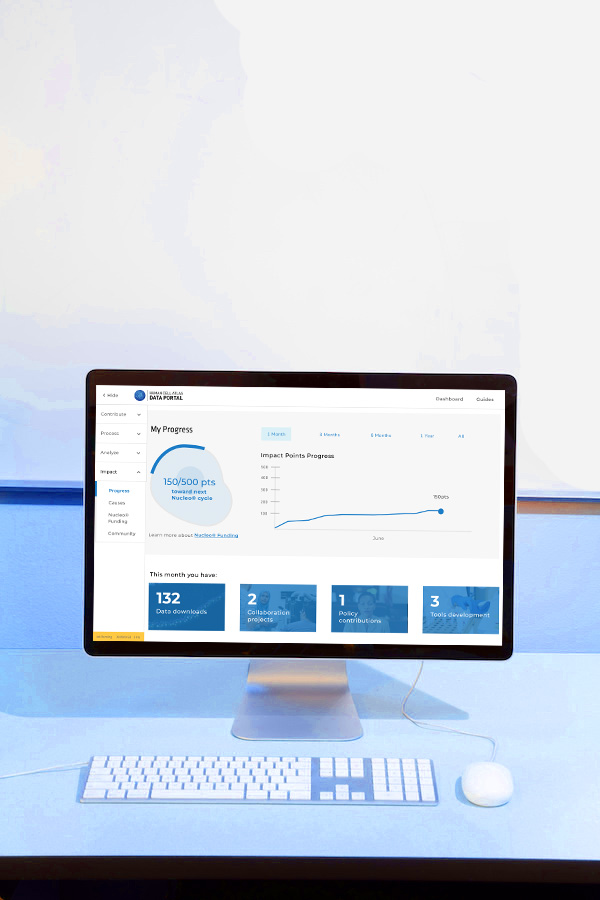
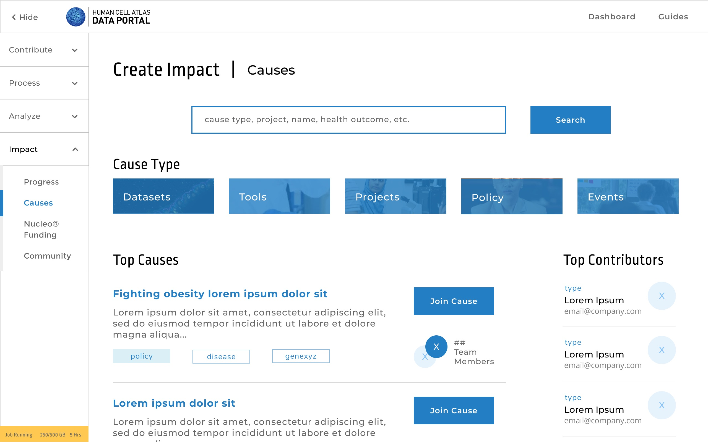

Helping scientists be better scientists
Design / Case Study
Developed concept for a user portal for the Human Cell Atlas (HCA), a project in the Science division at Chan Zuckerberg Initiative (CZI). Addressed pain points in the data upload journey by bioinformaticians and computational biologists. Created a new, innovative micro-funding program.

